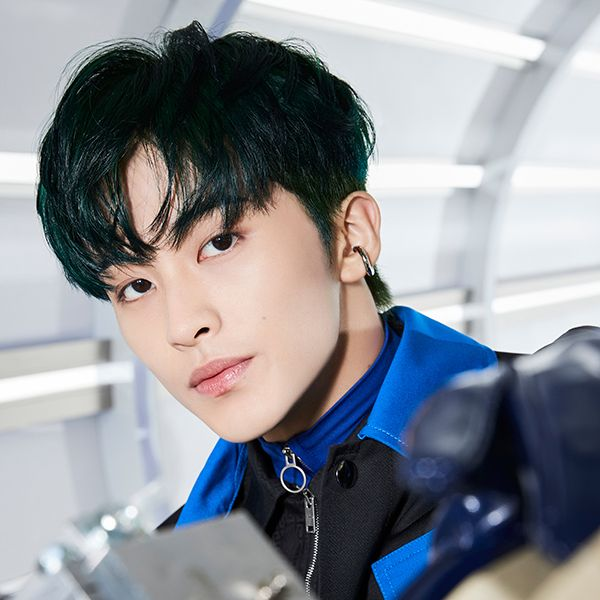

- MARK
- RENJUN
- JENO
- HAECHAN
- JAEMIN
- CHENLE
- JISUNG
MARK

SM엔터테인먼트 소속 보이그룹 NCT와 서브 그룹 NCT U, NCT 127, NCT DREAM 그리고 연합팀 SuperM의 멤버.
한국계 캐나다인 2세이다. NCT에서 한국을 베이스로 활동하는 모든 서브 그룹에 소속된 멤버이며,
팀 내 메인래퍼와 메인댄서를 맡고 있다. 뿐만 아니라 보컬, 작사, 기타 실력, 뛰어난 콘셉트 이해도와 소화력을 갖고 있다.